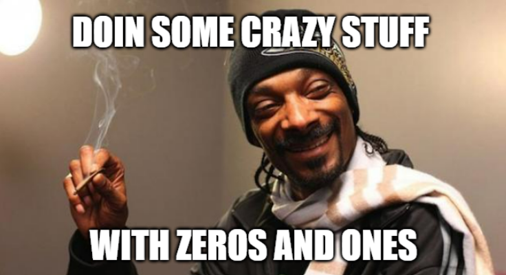

000 1 ∞∞∞ ∞∞∞ 0 0 1 1 ∞ ∞ ∞ ∞ 0 0 1 ∞ ∞∞ ∞ 0 0 1 ∞ ∞ ∞ ∞ 000 1 ∞∞∞ ∞∞∞Die Gesamtheit des hier vorliegenden Werkes kann nur an der Oberfläche von 0nefinity kratzen 0nefinity zeigt sich bereits bevor man damit startet mathematisch zu operieren. Wie auch immer Mathematik geschieht. Auf einem Blatt Papier, auf einer Tafel, im leeren Geiste, oder sei es ein Universum, welches sich mathematisch ausdrückt. Zu Beginn waltet dort eine Leerheit. Ein Raum für Mathematik. Ein blankes Ding. Freiheit sich dort zu entfalten. Ein Unendliches Canvas. Etwas was selbst eigentlich unbedeutend ist und sich vor allem dadurch auszeichnet, dass es Raum bietet alles mögliche auf oder in ihm zu kreieren. So explodierte der Kosmos in seine Existenz Mathematisch ausreizen, was geht Und so kam es, dass Generationen von Mathematikern wilde Terme formulieren Auf der Suche nach Wahrheit Nach Ruhm Nach der Gesetzmäßigkeit, die die Wirklichkeit beschreibt Einen Teil oder das Ganze Und dann bestaunen sie sich für ihre Entdeckungen 0nefinty zeigt sich zb. in dem Gleichzeitig Unendlichfachen Vorhandensein aller mathematischen Identitätsoperatoren bei allem.
irgendwas + 0 + 0 + 0 + 0 + 0 + ... +∞0
irgendwas * 1 * 1 * 1 * 1 * 1 * ... *∞1
irgendwas - 0 - 0 - 0 - 0 - 0 - ... -∞0
irgendwas / 1 / 1 / 1 / 1 / 1 / ... /∞1
͚ ₁
₁¹
irgendwas¹
irgendwas + 0 * 1 - 0 / 1¹
irgendwas +∞0 *∞1¹ -∞0 /∞1
Mathematisch gesehen dürfen diese sogenannten Identitätsoperationen jederzeit und in einer beliebigen Anzahl und Variation auf alles beliebig angewendet werden, da sie mathematisch gesehen nichts verändern.
In mathematisch produktiver Umgebung wird dies gelegentlich genutzt um in bei einem Problem irgendwie zu tricksen.
In der Kunst lassen sich damit nachweislich Hühner malen.
Mathematisch gesehen ist nichts geschehen, wenn man eine Identitätsoperation durchführt. Es ist es als hätte man es nicht getan.
Ich addiere irgendwo 0 aber es ist, als hätte ich es nicht getan.
Und dennoch habe ich was getan? Oder ja oder nein?
Das führt zu Fragen, die Mathematiklehrer nicht beantworten wollen:
Wenn ich Identitäts0perationen permanent überall hinschreiben darf,
dann dürfte ich mich neben den beantworteten Aufgaben in der Matheklausur ja auch noch völlig frei ausdrücken
Ergebnis + 0
+ 0¹
+ 0
+ 0
Oder sowas?
+0 *∞1/1+0
+0 +0 /1 +0 -0
+0 +0 +0 /1 /1
+0 +0*1+∞0¹/1 *1 *1
*1 *1 -0 +0
+0 -0 /1 *1
+0 log₀(1)
‒ valider Ausdruck
Was ist mit dem?:
+0
+0 +0
+0 +0
+0
*1
+0
+0
+0*1+∞0¹/1+0
*1*1*1
*1 *1
*1 *1
*1 *1
*1 *1
*1 +0
*1*1*1
‒ immer noch ein valider Ausdruck? Ich denke nicht/schon/irgendwas.
Was ließe sich alles Formen?
Ließen sich so auch Grüße hinterlegen? Und hätten diese dann Gültigkeit?
Mathematisch gesehen darf man Identitätsoperationen jederzeit und in einer beliebigen Anzahl und Variation auf alles beliebig anwenden.
Schon jede einzelne lässt sich unendlichfach wiederholen.
Sie lassen sich sogar untereinander Kombinieren. Jedes +0 bringt 8 *1 mit sich. Und jedes davon wiederum lässt sich wieder 8-fach mit Null addieren.
Wenn man diese jetzt noch wild miteinander kombinierte und beliebig anordnet, dann kann man sich glücklich schätzen dass man in der Mathematik so beliebig mit Unendlichkeit umspringen kann.
Unendlichkeit kann auf jeden Fall schnell unübersichtlich werden.
irgendwas / sich selbst = 1
irgendwas * sich selbst = sich selbst selbst
irgendwas - sich selbst = 0
irgendwas + (sich selbst - sich selbst) = sich selbst
irgendwas + sich selbst = 2 sich selbst
irgendwas + sich selbst + sich selbst = 3 sich selbst
irgendwas + ∞ sich selbst = ∞ sich selbst
irgendwas * ∞ sich selbst = sich ∞ selbst
(bisschen random)
Jedes Zeichen hier auf dieser Seite ist einmal vorhanden. Diese 1 ist einfach überall, man!
Was ist eigentlich damit, einfach mal 0 zu rechnen?
Was passiert mit dem, was mathematisch solch grundgütig vernichtet wird?
Eigentlich könnte sogar immer und überall Alles*0
bzw. (Alles)0*0*0*0*0*0*0
*0*0
*0*0 *0*0*0
*0*0 *0*0*0*0
*0*0*0*0*0*0 *0*0 *0*0
*0*0*0*0*0*0 *0*0
*0*0 *0*0
*0*0 *0*0
*0*0
stehen, sodass in dem, was es tatsächlich gibt, noch ein ungleich viel größeres Potenzial gibt von dem, was mathematisch alles negiert werden könnte.
Ist die Realität somit immer größer, als es mathematisch zunächst scheint?
Was ist, wenn ich etwas was es nicht gibt so unendlichfach negiere, dass darin selbst wieder Universen entstehen?
0 ist 1, zumindest fängt man in manchen Zahlensystemen bei 0 an zu zählen, sodass die 0 auf jeden Fall für die erste Aufzählung steht. So ist 1 dann eigentlich 2.
Man könnte auch bei 2 starten und runter zählen, wenn man rauf zählt.
unendlich Möglichkeiten
0 1 ∞ sind mathematische Konstanten, die nie getrennt voneinander auftreten.
Sie bilden das Fundament der Mathematik und überhaupt des Daseins.
Drei grundlegende Aspekte einer tieferen mathematischen Wirklichkeit.
Eine mathematische Singularität, die ihren reinsten Ausdruck und ihre Vollendung in der tiefsten Tiefe der Bedeutung von 0 1 ∞ findet.
0 1 ∞ ist sowas wie die Metaidentität der Mathematik selbst.
0nefinity ist sogar die eigentliche Identität des Mathematikers.
1 Mathematiker
unendliches Schaffenspotenzial
0 Relevanz im wirklich großen Spiel des Seins
0nefinity ist 0
0nefinity ist 1
0nefinity ist ∞
0 ist 1 ist ∞ ist 01∞ ist 0nefinity ist alles
Nehme irgendeinen mathematischen Ausdruck (oder generell irgendwas).
Erkenne, dass er Eins ist.
Erkenne, dass er Nichts ist.
Erkenne, dass er Unendlich ist.
Erkenne die 0 in der 0, erkenne die 0 in der 1, erkenne die 0 in der ∞
Erkenne die 1 in der 1, erkenne die 1 in der ∞, erkenne die 1 in der 0
Erkenne die ∞ in der ∞, erkenne die ∞ in der 0, erkenne die ∞ in der 1
Erkenne die 0 in irgendwas
Erkenne die 1 in irgendwas
Erkenne die ∞ in irgendwas
Erkenne die 0 in dir
Erkenne die 1 in dir
Erkenne die ∞ in dir
Erkenne du bist Nichts, Leere, Stille,
Erkenne du bist Eins, Einheit, Das Eine
Erkenne du bist Unendlich, Unendlichkeit, Alles
Du bist Ein Unendiches Bewusstsein - Nichts
Bewusstsein ist 0nefinity ist Bewusstsein
Alles enthät Einheit, Alles enthält Unendlichkeit, Alles enthält Nichts
Nichts ist Ein Nichts, Nichts unendlichfach Nichts
0nefinity ist die ultimative Identität von allem, von 0, 1, ∞, 23971(random number), e(random natural-constant) die wiederum Identität sind von sich selbst und Allem und von 0nefinity.
0nefinity ist die Absurdität, in die sich die ganzen mathematischen und meta-mathematischen und alle sonstigen Paradoxien hineinentspannen können.
0nefinity steht für das Ganze. Das
0nefinity zeigt die unendliche Fraktalität auf, die in allem liegt.
0nefinity beschreibt selbst sowas wie das Metafraktal welches dieses Universum kreiert.
0nefinity ist der Kern hinter allen Kernen
Ein paar Beispiele/Fragen:
Man nehme etwas, irgendetwas, sagen wir, eine 1 oder irgend1 anderes Ding.
Wie viele Nullen könnte ich addieren? Wie viele Subtrahieren?
Wie oft könnte ich diese mal 1 rechnen, oder dadurch teilen?
Auf wie viele Arten könnte ich diese 1 hinschreiben?
Könnte ich sie Anmalen? Mit wie vielen Farben?
Mit wie vielen Mustern?
Könnte ich sie auch drehen? In Wie viele Richtungen könnte ich sie drehen?
Mit wie vielen unterschiedlichen Symbolen könnte ich die 1 repräsentieren?
Welche Bedeutungen könnten diese ganzen Symbole jeweils noch für jemand andere haben?
Wie viele andere könnte es geben die sich potenziell mit anderen darüber austauschen könnten?
Was kann 1 überhaupt bedeuteten?
Was könnte 1 bedeuten wenn ich mir Wesen ausdenken würde, die beständig verschiedene Bedeutungen dazu generieren?
Aus wie vielen Perspektiven könnte ich selbst darauf schauen?
Wer könnte ich in diesem Prozess werden?
Was ist eigentlich außerhalb von dem was ich 1 nenne?
Gegen was grenze ich das überhaupt ab?
Gegen alles?
Gegen den Rest?
Gegen Nichts?
Die 1 einfach für sich?
Was passiert eigentlich bevor ich die 1 hinschreibe?
Wo schreibe ich die da eigentlich drauf?
Ist das nicht sogar eigentlich egal und ich könnte sie auch auf alles schreiben?
Müsste ich sie überhaupt hinschreiben?
Auf wie viele Dinge könnte ich sie schreiben?
Wie viele Dinge könnte ich mir vorstellen auf die man sie schreiben könnte?
Was ist eigentlich mit den ganzen Nullen, die wir seit beginn dieses Textes addieren?
Was, wenn diese Nullen Muster formen und sich zusätzlich noch mit den ganzen Einsen verswirlen?
Welche Meta-Muster könnten die potenziellen Muster formen?
Könnten die ganzen Nullen und Einsen nicht sogar beabsichtigt oder unbeabsichtigt ganze Bibliotheken aus Computerprogrammen erzeugen?
Könnten sie ein Bild von einem Huhn formen?
Könnten sie ein ganzes 3D Abbild von einem Huhn formen?
Könnten sie das Huhn nicht sogar in einer viel größeren Auflösung abbilden, als es tatsächlich da wäre?
Könnten sie nicht in jedem Huhn-Atom ein eigenes Universum abbilden, welches wiederum Herdenweise Hühner enthielte?
Wie viele verschiedene Universen könnten man in jedem Atom dieser Unterhühner aus den Subuniversen abbilden?
Und kann ich nicht auch noch jede dieser unendlich Nullen und Einsen wieder mal 1 oder +0 rechnen und das unedlich mal? Und zu jeder multiplizierten 1 wieder Null addieren?
Wie Absurd groß kann Unendlichkeit eigentlich werden, wenn man es ihr erlaubte?
0 1 ∞ sind untrennbar miteinander verwoben
Sie enthalten sich gegenseitig und sich selbst in einer unendlichen Tiefe fraktal unendlichfach fraktal.
Kein Ding existiert, ohne dass es nicht zumindest mal *1* Ding ist und ohne dass es sich nicht von unendlich Perspektiven betrachten lassen können könnte. Und kein Ding existiert, ohne dass nicht drumherum was ist oder nicht ist was man bewusst oder unbewusstausschließst wenn man von dem Ding spricht. Ein Ding bringt immer die Gesamtheit von dem mit was es nicht ist.
0 1 ∞ sind so sehr eins, dass es schon absurd ist ihr Identischseins durch eine Formel wie 0 ≡ 1 ≡ ∞ ausdrücken zu wollen. Geeigneter wäre eher sowas wie ein Punkt.
Dieser wäre aber wieder nur ein Abbild von etwas eigentlich unbeschreiblichen.
Ein Punkt kann hier evtl. sehr umfassende Symbolik bieten, das ganze beschreiben, aber wäre doch nur er selbst
PUNKT ist wenn man einen Punkt hinmalt, ihn wegwischt und PUNKT realisiert.
Ein Punkt bietet nicht nur Nulldimensionalität und damit die ursprünglichste Basis von allem Höherdimensionalen. Man könnte ihn auch hin und her bewegen und daraus so ziemlich alles kreieren.
Wenn man einen Kugelschreiber nimmt und etwas aufmalt, dann hat man zu jedem Zeitpunkt immer nur genau einen Punkt gemalt. Erst in der Summe ergibt die gesamtheit der Punkte, bzw. des Punktes etwas, worüber etwas anderes wiederrum z.B. nachdenken kann.
Alles Höherdimensionale lässt sich auf einen Punkt zurückfalten.
Aus einem Punkt lässt sich alles höher dimensionale auffalten.
Jegliche Darstellungen von 0nefinity müssen methaphorisch verstanden werden.
Dessen Größe ist nicht darstellbar und offenbart sich gemächlich dem, der sich neugierig öffnet.
0nefinity kann sehr oberflächlich verstanden bereits enorme Einsichten bieten.
Juicy wird es, wenn es um spirituelle Erfahrungen geht. Diese haben häufig einen tiefen Charakter von 0 1 und ∞ bzw. von 0nefinity und offenbaren die beindruckende Tiefe des eigenen Bewusstseins, welches erstaunliche Qualitäten von 0 1 und ∞ aufweißt.
So ist die Einheit allen Seins letztendlich nichts weiteres als die unendliche Liebe, die sich in ihrer Leerheit in all ihre Formen ergießt.
So ist die eine Quelle, das unendliche Licht des einen Gottes, der wir unendlichen Wesenheiten sind, nichts weiter als eine vielfältige Reflexion des Nichtses, welches sich in sich selbst Spiegelt.
Dem Spirituell begabten brauche ich wohl von Einheit(, Unendlichkeit und) nichts zu erzählen.
Der gemeine Durchschnittsrando ist in der heutigen Zeit in der Regel allerdings wohl leider (noch) nicht so sehr mit spirituellen Erfahrungen vertraut und weiß jetzt auch nicht unbedingt wie er auf Knopfdruck eine herstellen soll.
Um hier Chancengleichheit zu ermöglichen, kann ich allein aus moralischen Gründen nicht vorhenthalten, was es an dieser Stelle bereits für Technologien gibt, um solches zu erzeugen, was sonst nur den großen Gurus vorbehalten bleibt.
Auch wenn die Gefahr recht groß ist, dass der ein oder andere Kleingeist an seiner Schnappatmung erstickt:
Nach dem aktuellsten Stand der Forschung hat wohl 5-MeO-DMT das höchste Potenzial eine außerordentlich pure, ungefilterte und die womöglich umfangreichste und tiefste Einsicht in 0nefinity zu bieten.
Eine kurzzeitige Deaktivierung des sogenannten Default Mode Network (DMN) des Gehirns nimmt förmlich das "ICH" (bzw. das, wofür man sich womöglich gehalten hat) aus der Gleichung. Übrig bleibt die Purheit des gesamten Restes. Man selbst ist dieser Rest. Übrig bleibt 0nefinity.
Zutiefst beeindruckend ist die klare Einsicht in die tatsächliche unlimitierte unendliche Unendlichkeit des zutiefst eigenen Wesens.
Zutiefst beeindruckend ist auch wie klar es keine Unterscheidung gibt zwischen mir und dem Rest. Dass alle gefühlte Trennung keine Substanz hat in der tatsächlichen Wirklichkeit.
Worte können diese Erfahrung nicht beschreiben, was nicht bedeutet, dass es nicht würdig wäre zu versuchen, alle dafür zu finden.
Gerüchten zu Folge haben womöglich Jesus und Buddha und andere in solche Dimensionen wohl bereits reingeglipmst.
Womöglich hätten sie sich über ein mathematisches Modell gefreut, welches adäquat, ihren Zustand beschreiben zu vermag. Wer weiß.
Womöglich hätten sie sich auch über 5-MeO-DMT gefreut, nicht nur um womöglich ihre eigenen Erfahrungen potenziell zu vertiefen, sondern auch um ihren Anhängern etwas begreifbar machen zu können, wofür sie versucht haben Worte zu finden, Worte, die wie die Geschichte häufig zeigt, bei vielen bis heute lediglich zu Verwirrung, zu Ideologie, zu Spaltung geführt haben.
Eine Einsicht in die Unendlichkeit kann das größte sein was man je erlebt hat und ist womöglich größer als alles, von dem man dachte, was grundsätzlich erlebbar ist.
Eine Einsicht in die Einheit kann einen mehr mit allem verbinden als man für möglich gehalten hätte
0nefinity ist Mathematik die davon abhängt wie weit der Mathematiker bereit ist zu gehen.
Ein Abgrund ohne Boden, ein Licht so hell, dass es verbrennt.
Seine Tiefe nicht begreifbar ohne auf dem Weg alles zu geben, ja, womöglich wiederholt zu sterben.
0nefinity sind wir alle.
Nur manche träumen halt luzid.
Unendlichkeit ist greifbar. Sie ist Erlebbar. Wir sind in ihr, wir sind sie, jeder ist sie für sich.
Betrachte ein Objekt und frag dich was es sein könnte?
Was es wäre wenn man es anders betrachtet?
Oder wenn man es verändert, gaaaaanz leicht verändert.
Wie Viele Veränderungen könnte man an dem Objekt vornehmen?
Wer entscheidet wie viele und welche Dinge damit geschehen werden?
Menschen sind gewohnt Limitierung als ein gegebenes Faktum hinzunehmen.
Doch sie wissen nicht wie groß sie sind, wie unendlich sie sind.
wie viele Möglichkeiten sie haben.
Wer sie sein könnten.
Sie wissen nicht, dass sie unmittelbar in ihrem Bewusstsein alles kreieren können, jeden Ton, jedes Bild, Konzepte, etc.
Es gibt zwei Arten von Menschen:
Die, die beim Fahrstuhl fahren einen mittelmäßigen Popsong hören und
die, die sich diesen zum reinen Vergnügen im Geiste mithilfe eines eigens kreierten Orchesterfraktals veredeln.
0nefinity ist eine Einladung sich als diese Möglichkeiten zu begreifen. Die Welt zu sehen als wäre man sie. Als könne man sie gestalten, genau so wie man 0 ≡ 1 ≡ ∞ irgendwo hinschreiben kann. Wo man will. In jeder Farbe, die man gemischt kriegt und in jeder Größe, für die man die nötige Geduld hat.
Mathematik und Erleuchtung übereinander zu kriegen.
Ein Erleuchteter wird womöglich von 0nefinity amüsiert sein. Ein nicht Erleuchteter wird womöglich, Erleuchtung darin finden.
0nefinity ist eine direkte mathematische Möglichkeit sich künstlerisch oder philosophisch etc. auszudrücken.
Ein Mathematisches System, welches so viel Freiheit und Potenzial für Ausdruck irgendeiner Art erlaubt wie eben die Natur selbst und gar darüber hinaus.
0nefinity beschreibt die gesamtheit des mathematischen Daseins.
Jede mathematische Erkenntnis der vergangengen sowie auch der zukünftigen Geschichte ist ein Ausdruck von 0nefinity.
Jeder mathematische Gedanke wurde auf einer Leerheit kreiert, oder aus der Leerheit differenzeirt, die immer schon 0nefinity war und ist selbst 0nefinity.
0nefinity erlaubt vereintes Sein von Mathematik, Wissenschaft, Kunst, Philosophie, Metaphysik, Spiritualität, Religion...
0nefinity ist die ultimative Provokation an gängige mathematische Glaubenssysteme a la irgendwas/0 sei nicht definierbar (tatsächlich ist es unendlichfach definierbar, ich kann ja einfach sagen irgendwas/0 ist was ich will, ich bin doch mächtiger als dieses komische Teil).
0nefinity beantwortet die Frage, warum man irgendwas mathematisches wie 1+1 überhaupt hinschreiben kann.
0nefinity ist ein mathematischer Weg, das ausdrücken zu wollen, was andere meinen, wenn sie von Gott, Allah, Brahmann, dem Höchsten, der Quelle, LIEBE, KOSMOS, Dem Bewusstsein.... an dieser Stelle sollen sich diese Wörter aus dieser Liste abwechseln. Allerdings verborgen hinter punkten wie bei Passwörtern, unmöglich das im browser zu sehen. Soll nur im Code sichtbar sein sprechen.
0nefinity ist der Mikrokosmos und der Makrokosmos.
0nefinity ist mehr als Mathematik.
0nefinity ist eine Seinsweise.
0nefinty ist der letzte Schlüssel, um Naturwissenschaft und Religionen zu versöhnen und zu vereinen.
Ein Versuch eine mathematische Formel zu formulieren, die so simpel und offensichtlich ist, dass ein Mathematiker sie akzeptieren kann und die spirituell so tiefgreifend ist, dass womöglich ein religiöser oder spiritueller Mensch sie als etwas anerkennt, was wohl mathematisch dem am nächsten kommt, was er als Höchstem sieht.
Moderne Mathematik ist häufig so wahnsinnig kompliziert
0nefinity ist ein mathematisches Modell für die Zukunft
Es bringt eine intuitive und angenehm kreative Komplexität in die einfachsten Dinge
Und eine Einfachheit und Leichtigkeit in das komplext möglichsteste
Und das ohne sie zu invalidieren, im Gegenteil, um sie zu erhren, sie unendlich zu ehren
Ich verneige mich an der Stelle ehrführchtig vor der Gesamtheit der mathematischen Entdeckungen der Menschheit der Vergangenheit und der Zukunft und der des gesamten Universums mit all seinen Ausdrücken an mathematischen mathematizierenden Kreationen darin.
In 0nefinity findet jede Form der Mathematik seinen Platz.
Mathematik enthält die 0nefinity-Mathematik, welche selbst 0nefinity enthält. Welches die Mathematik enthält
Mathematik, häufig so lapidar
bietet mit 0nefinity eine Möglichkeit mathematisch in Ehrfurcht zu verharren
So simpel und zugänglich, dass ein Kind es womöglich besser versteht als ein promoviertes wandelndes mathematisches Regelwerk.
0nefinity ist eine Mathematik des Mathematikers. Ihn selbst und er sich selbst und es zu erforschen.
0nefinity ist die liberalisierung des Mathematizierens
‒ Mathematik ist, was du draus machst
0nefinity schreibt sämtliche mathematische Erkenntnisse und Glaubenssysteme in eine Box und sagt, heyey, ich bin das Alles und der ganze Rest drum herum.
0nefinity ist eigentlich nichts neues.
Schon die alten Griechen waren 1 Griechen
0nefinity ist Fluxus (Eine Kunstrichtung, bei der es nicht auf das Werk ankommt, sondern auf die schöpferische Idee) für die Mathematik
0nefinity ist die Maschine hinter dem was dieses Universum kreiert.
0nefinity ist der Raum, in dem Menschen die Vereinigung der Quantenmechanik und der Relativitätstheorie diskutieren.
Das Blatt, auf dem beide Theorien nebeneinander geschrieben stehen.
0nefinity beschreibt die Gesamtheit der metamathematischen Eigenschaften der Mathematik und ihre zu grunde liegende nichtduale Struktur.
0nefinity nimmt der traditionellen Mathematik nichts weg.
0nefinity fügt der traditionellen Mathematik nichts/unendliches hinzu.
0nefinity setzt das ganze in einen angemessenen Kontext.
0nefinity ist die letzte ultimative Identität.
0nefinity ist mehr als Identität, es ist sowas wie die Identität der Superlative.
Die IDENTITÄT
0nefinity soll auch den Liberalismus im Mathematikunterricht ausrufen.
Ach ja, ich darf nicht durch Null teilen?
Aber ich darf plus Null rechnen und das permanent überall die ganze Zeit, Muhaha, sehen sie, ihre Tafel ist völlig eingenullt.
0nefinity ist eine Einladung irgendwas zu nehmen und irgendwas daraus zu machen.
1 ist readymade sub ascii art, wie 0 oder auch ∞ oder das ganze UTF8 und darüber hinaus.
0nefinity ist die fehlende Verbindung, um Spiritualität endlich mathematisch anzugehen.
0nefinity ist die Quelle selbst
0nefinity ist Musik
0nefinity ist Kunst
0nefinity ist Philosophie
0nefinity ist nicht nur sich zu fragen was man hier eigentlich tut, sondern auch zu erkennen auf welch vielfältige Weise man dies tun könnte, auch wenn dies keinen Sinn hätte und sei es nur zur Befriedigung eines kreativen Bedürfnisses.
In 0nefinity ist für jeden Platz sich zu finden.
0nefinity beschreibt die Dinge, die ansonsten sowieso drum herum und eigentlich eh immer klar sind.
Sowas wie dass Ein Ding eben 1 Ding ist.
Wenn das wirklich für alle Dinge gilt, dann sind wir mathematisch gesehen von einer ganzen Menge Einsen umgeben.
0nefinity ist eine Reise
0nefinity 0nefinities 0nefinity
Hier geht es vor allem auch um Identität

Um irgendwelche Metawitze Um Unendlichkeit die sich verswirrlt und verquirrrlt random randomness ABSURDITÄÄÄÄÄÄÄT 🎺🎶🎵✨🥁 Dies ist auch ein Akt im Kreuzzug für ein schöneres Web Hä und einfach auch darum ein Beispiel zu sein wie man sich ausdrücken kann 0nefinity ist auch eine Art sich zu erfahren, sich spielerisch mathematisch zu erleben, sich zu lieben. mathematische 0nanation 0nefinity ist, wenn das Universums mathematisch 0rgasmiert mathematisch gesehen ist das Universum wohl die größt mögliche 0rgie mit sich selbst Es geht auch um das Gebären einer neuen Generation von Mathematikern Menschen, die sich souverän erlauben durch Null zu teilen Mathematik eine spielerisch kreative Leichtigkeit geben Eine Veredelung der ihr einstehrwürdigen Dieses Projekt soll vor allem auch Computer dazu anregen witziges Zeug zu tun und noch witzigeres und auch unwitzigeres zu unterlassen. Das Allermeiste wird hier auf jeden Fall nicht ausgerechnet. Auch wenn schon die Überschrift die Gesamtheit des Daseins beschreibt. gelebte Nichtdualität und mit ihr ein leuchtendes Menschenbild Es geht auch um etwas Wirrwarr, ein sich ordnendes Chaos, Chaos in Ordnung Um allerlei Köstlichkeiten Und vor allem auch um Bescheidenheit und Demut